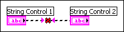

Controls are front panel objects for entering data to a VI interactively or to a subVI programmatically. They are considered to be data inputs. Data flows from data inputs to data outputs, such as indicators. You can wire one data input to many data outputs. Wiring two data inputs together results in an error.
To correct this error, right-click one of the controls and select Change to Indicator from the shortcut menu.